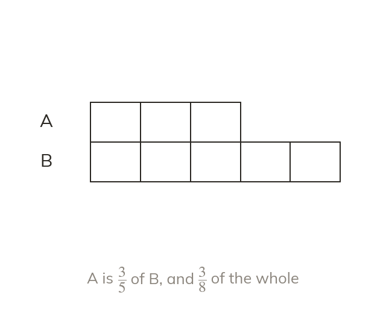
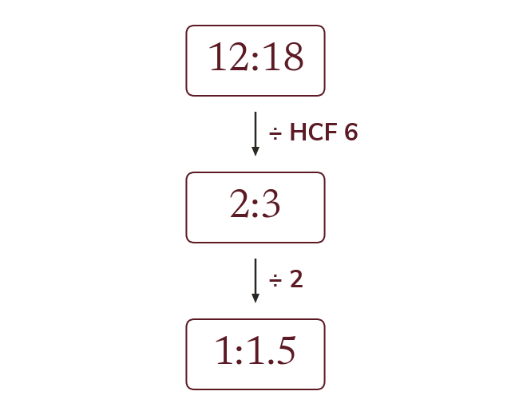
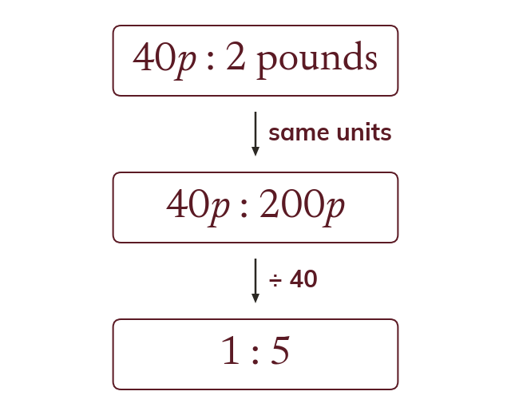
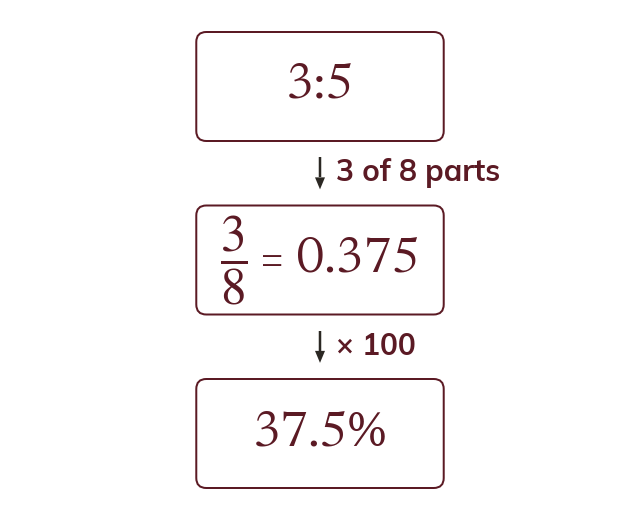
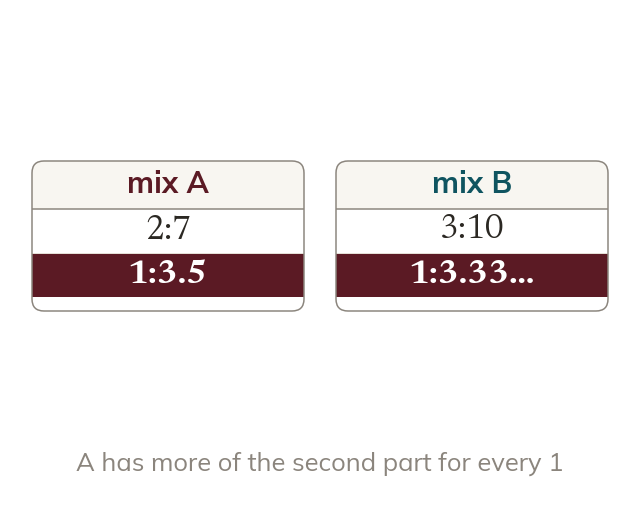
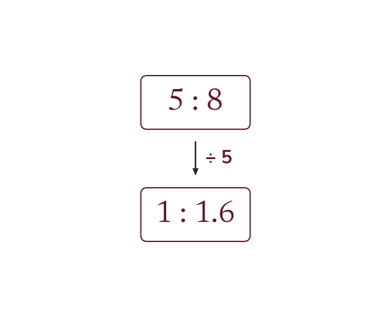

What a ratio records
A ratio a:b records a multiplicative relationship between two quantities. The first part is ab of the second part, and aa+b of the whole.
Ratio, fractions, decimals and percentages all describe the same kind of relationship between quantities. Today is about moving freely between the four, and simplifying a ratio to its clearest form.
Work down the page at your own pace. Write every answer in your book first, then click to check it.
Read each card, then follow the worked examples one step at a time.

A ratio a:b records a multiplicative relationship between two quantities. The first part is ab of the second part, and aa+b of the whole.

Both parts must share a unit first. Then divide both by their HCF. For 1:n, divide both by the first part.

Pick an answer. If it's wrong, the feedback tells you which mistake it was.
Read each card, then follow the worked examples one step at a time.

Fractions, decimals, percentages and ratios express the same relationship. A ratio a:b gives the fraction aa+b of the whole.

The form 1:n makes ratios easy to compare. Divide both parts by the first part. n need not be a whole number.

Pick an answer. If it's wrong, the feedback tells you which mistake it was.
Finished? Next lesson: 9.15.2 Dividing into a Ratio.
Log in, then search for a code to practise that skill.
Videos, worksheets and more on each part of this lesson.